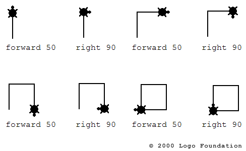

I've always been interested in technology. I can recall the days of playing The Count on the Vic 20 computer, or learning how to make the Logo turtle make designs or learning about artists modding Nintendo cartridges as art. I love to understand the how's and why's to a lot of things.
I love to learn and adapt to grow in my life. I've learned about technology (and continue to do so, since it's constantly evolving), photography, languages, how to make soap and other bath products, and just recently signed up to take lessons to learn how to play the guitar.
I am a freelance photographer and enjoy experimenting and shooting in manual mode (as this was the only way to shoot when I learned). On occasion I shoot 35mm film and just recently recently started developing 35mm film in coffee. It's less toxic to the environment, myself and is cheaper.Please feel free to check out some of my work created in this class and also my photography site.